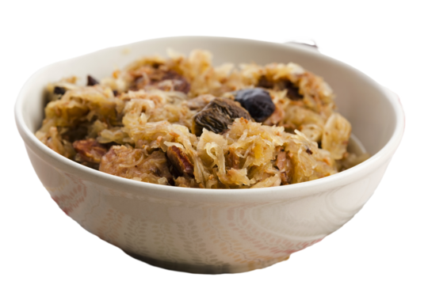

Bigos
Navigation
🏡 Home
Lasagna
Pierogi

Raindrops, drop top. A lot of smoked meats in a hot pot.
There is
nothing better during cold winter than a bowl of Bigos, beloved Polish
dish.
In english speaking world it's also known as Hunter's Stew.
Ingredients:
- 1 pound kielbasa sausage, sliced into ½-inch pieces
- 2 thick slices hickory-smoked bacon
- 1 pound cubed pork stew meat
- ¼ cup all-purpose flour
- 4 cups shredded green cabbage
- 2 carrots, diced
- 1 onion, diced
- 1 ½ cups sliced fresh mushrooms
- 3 cloves garlic, chopped
- 1 (16 ounce) jar sauerkraut, rinsed and well drained
- ¼ cup dry red wine
- 1 bay leaf
- 1 tablespoon sweet paprika
- 1 teaspoon dried basil
- 1 teaspoon dried marjoram
- ¼ teaspoon salt
- ⅛ teaspoon ground black pepper
- ⅛ teaspoon caraway seed, crushed
- 1 pinch cayenne pepper
- 5 cups beef stock
- 1 cup canned diced tomatoes
- ½ ounce dried mushrooms
- 2 tablespoons canned tomato paste
- 1 dash bottled hot pepper sauce
- 1 dash Worcestershire sauce
Preparation:
- Gather the ingredients. Preheat the oven to 175°C
-
Heat a large pot over medium heat. Add kielbasa and bacon; cook and
stir until bacon has rendered its fat and sausage is lightly
browned. Use a slotted spoon to remove the meat and transfer to a
large casserole or Dutch oven
-
Coat cubes of pork lightly with flour and fry them in the bacon
drippings over medium-high heat until golden brown. Use a slotted
spoon to transfer pork to the casserole.Add cabbage, carrots, onion,
fresh mushrooms, and garlic. Add in sauerkraut. Reduce heat to
medium; cook and stir until carrots are soft, about 10 minutes. Do
not let the vegetables brown
-
Deglaze the pan by pouring in red wine and stirring to loosen all of
the bits of food and flour that are stuck to the bottom. Season with
bay leaf, paprika, basil, marjoram, salt, pepper, caraway seed, and
cayenne; cook for 1 minute
-
Mix in beef stock, tomatoes, dried mushrooms, tomato paste, hot
pepper sauce, and Worcestershire sauce. Heat through just until
boiling. Pour vegetables and all of the liquid into the casserole
dish with meat. Cover with a lid
-
Bake in the preheated oven until meat is very tender, 2½ to 3 hours
Tips
Best served with fresh bread. It preserves very well and usually
tastes better reheated.